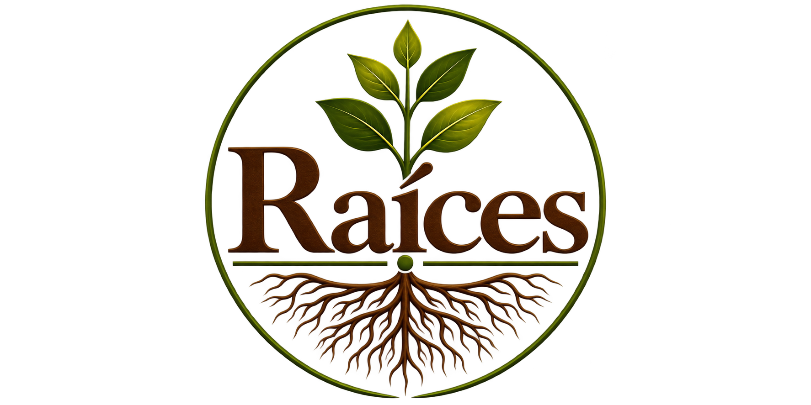

Sigue creciendo
El discipulado te ayuda a profundizar tu fe acompañado por otros creyentes y continuar desarrollando tu vida cristiana.
Contenido próximamente
Estamos preparando esta etapa de tu camino.

El discipulado te ayuda a profundizar tu fe acompañado por otros creyentes y continuar desarrollando tu vida cristiana.
El discipulado te ayuda a profundizar tu fe acompañado por otros creyentes y continuar desarrollando tu vida cristiana.